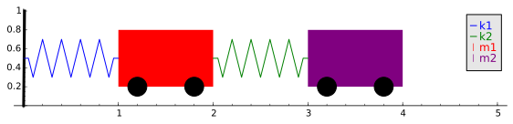

[Go to the Notes on Diffy Qs home page]
Notes on Diffy Qs - Sage demos for section 3.6
Press the Activate button below to launch the Sage demonstration. After the demonstration launches you should be able to interact with it to change numbers with sliders. You may have to wait a little before the graph appears. Be patient.
Two carts on springs
Let the setup be as in the picture:

You can change the spring constants and masses, and give initial conditions. The position of each cart is relative to its rest position.
The original code is mainly due to Ryan Burkhart.